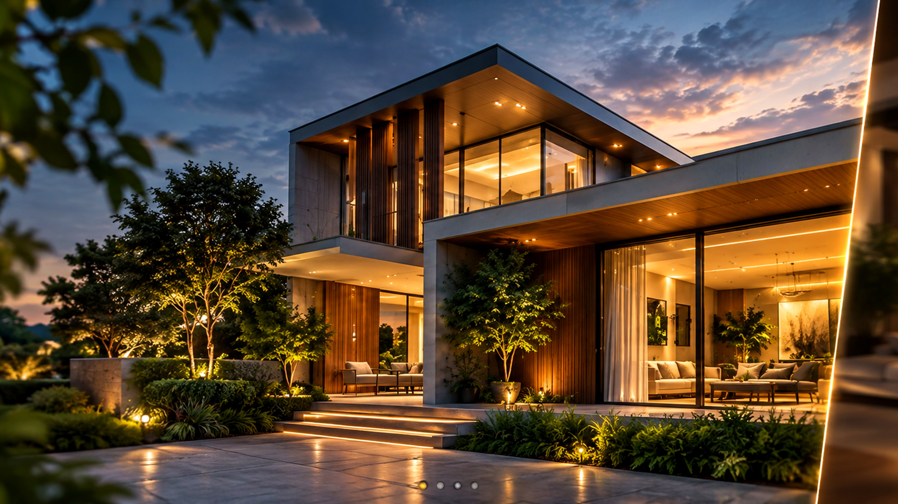

Journal
Ideas for better spaces.
Practical notes on planning, architecture, materials and interiors — written to make your project journey clearer.

How to plan a home project without surprises
Budget, timelines, decisions and the questions worth asking before work begins.

What makes a good design brief?
Five useful questions to answer before the first drawing is made.

Choosing finishes that age beautifully
Balance trends, durability and a timeless material palette.

Designing a home around natural light
Simple planning choices can change how a room feels throughout the day.

Modern design with a sense of place
How local context, climate and material can influence a contemporary home.

What to decide before selecting materials
A decision sequence that can make specifications and procurement easier.